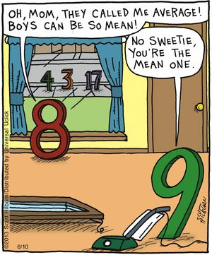
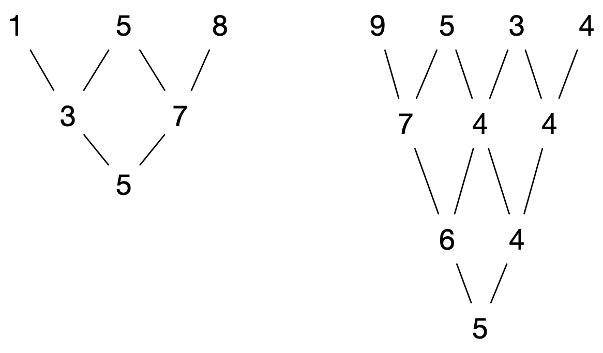

In what concerns the continuous evaluation solving exercises grade during the semester, you should submit until 23:59 of October 25th
(this exercise will still be available for submission after that deadline, but without counting towards your grade)
[to understand the context of this problem, you should read the class #03 exercise sheet]
In this problem you should submit a function as described. Inside the function do not print anything that was not asked!
The name of the .py source file you submit to Mooshak should NOT start with a digit (you will get an error if you submit it like that).

Picture this: a bunch of digits throw a party, and they’re all trying to show off their skills. Your mission, should you choose to accept it, is to help these digits team up.
Write a function digits_average(n) that takes a positive integer n and repeatedly calculates the average of its consecutive digits until a single-digit number is obtained. The function should return this final single-digit average.
If the average of two digits is not an integer, round the result up using math.ceil.
As an example, the result of digits_average(158) should be 5 and the result of digits_average(9534) is also 5. The following figure explains the process for these two examples. Each level corresponds to averaging pairs of consecutive digits as described.

Try to solve challenge without indexing lists or strings!
The following limits are guaranteed in all the test cases that will be given to your program:
| 1 ≤ n ≤ 1050 | The positive integer n |
| Example Function Calls | Example Output |
print(digits_average(158)) print(digits_average(9534)) print(digits_average(9062)) |
5 5 4 |